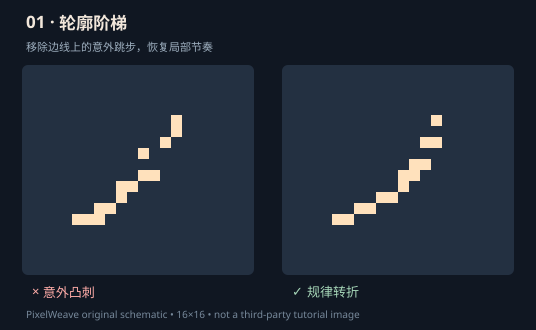

PIXELWEAVE / NATIVE PIXEL LAB 01
看见每一颗像素
为什么这样移动。
当前只展示获得继续打磨许可的第一件原生药瓶：64×64 像素、11 个独立图层、12 帧循环。支持逐帧播放、隔离图层和观察帧间差异。不再将被否决的旧素材作为审美参考。
02 / LIVE SPRITE VIEWER
Vermilion Nocturne
F01 / 01
可以暂停查看某一帧，单击右侧眼睛按钮隔离不同的绘制部件。
04 / BEFORE & AFTER
技法原理：练习与对照
先看错误与修正版在原尺寸的感觉，再放大观察像素簇。以下对照图全部为项目原创示意。